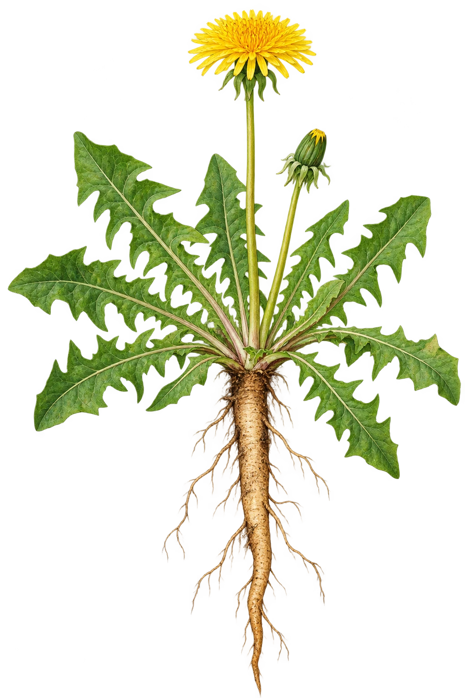

Løvetann
Taraxacum officinale agg.Artsgodkjent
Den lange, sammenhengende pælerota dominerer over siderøttene. Dypt flikete grunnrosett, to bladløse blomsterstengler, gul tungeblomstkurv og tilbakebøyde ytre korgdekkblad. Hul stengel og melkesaft kan ikke verifiseres på denne tegningen. Illustrerer aggregatet, ikke en bestemt småart.